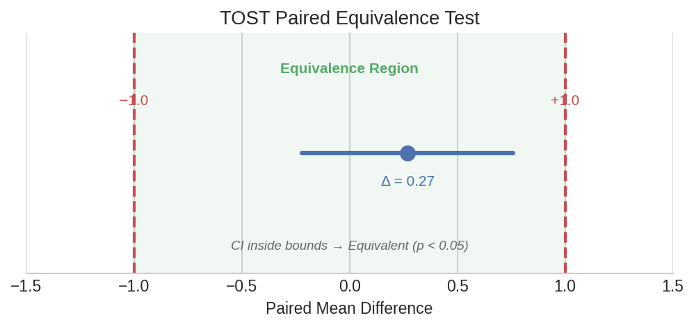
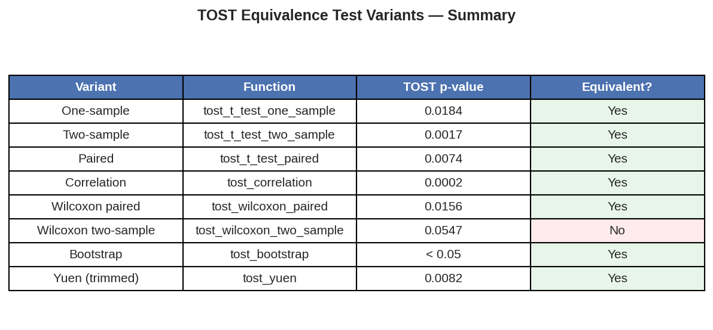

Equivalence Testing (Complete TOST Guide)¶
In pharmaceutical bioequivalence studies and method comparisons, the question is not "are these different?" but "are these close enough?" The Two One-Sided Tests (TOST) procedure answers this by testing whether an observed difference falls within a pre-specified equivalence margin. This page covers all 8 TOST variants available in polars-statistics.
Setup¶
One-Sample Equivalence¶
A batch dissolution test targets 100% release. Twenty tablets are tested — is the batch mean equivalent to the target within a margin of ±2 units?
df_batch = pl.DataFrame({
"dissolution": [98.5, 101.2, 99.8, 100.5, 97.3, 102.1, 99.0, 100.8,
98.2, 101.5, 99.5, 100.2, 97.8, 101.8, 99.3, 100.6,
98.8, 101.0, 99.6, 100.3]
})
result = df_batch.select(
ps.tost_t_test_one_sample("dissolution", mu=100.0, delta=2.0).alias("tost")
)
tost = result["tost"][0]
print(f"Estimate (mean - mu): {tost['estimate']:.2f}")
print(f"CI: [{tost['ci_lower']:.2f}, {tost['ci_upper']:.2f}]")
print(f"TOST p-value: {tost['tost_p_value']:.6f}")
print(f"Equivalent: {tost['equivalent']}")
Expected output:
The batch mean (99.89) is well within ±2 of the target (100.0). The tiny TOST p-value gives strong evidence of equivalence.
Paired Equivalence¶
Two analytical methods are run on the same 20 samples. Are they equivalent within ±0.2 units?
df_paired = pl.DataFrame({
"method_a": [5.12, 4.98, 5.25, 5.08, 4.95, 5.18, 5.02, 5.30,
4.88, 5.15, 5.05, 5.22, 4.92, 5.28, 5.10, 5.35,
4.85, 5.20, 5.08, 5.32],
"method_b": [5.08, 5.02, 5.18, 5.12, 4.98, 5.22, 4.95, 5.25,
4.92, 5.10, 5.08, 5.15, 4.88, 5.32, 5.05, 5.28,
4.90, 5.18, 5.10, 5.30],
})
result = df_paired.select(
ps.tost_t_test_paired("method_a", "method_b", delta=0.2).alias("tost")
)
tost = result["tost"][0]
print(f"Mean difference: {tost['estimate']:.3f}")
print(f"CI: [{tost['ci_lower']:.3f}, {tost['ci_upper']:.3f}]")
print(f"TOST p-value: {tost['tost_p_value']:.1e}")
print(f"Equivalent: {tost['equivalent']}")
Expected output:
The mean difference of 0.011 is tiny compared to the ±0.2 margin. The methods are clearly interchangeable.

Plot code
import matplotlib.pyplot as plt
fig, ax = plt.subplots(figsize=(8, 2.5))
delta = 0.2
ax.axvline(-delta, color="#C44E52", ls="--", lw=2)
ax.axvline(delta, color="#C44E52", ls="--", lw=2)
ax.axvspan(-delta, delta, alpha=0.08, color="#55A868")
ci_lo, ci_hi = -0.007, 0.029
ax.plot([ci_lo, ci_hi], [0.5, 0.5], color="#4C72B0", lw=3)
ax.plot(0.011, 0.5, "o", color="#4C72B0", ms=10)
ax.text(-delta, 0.1, f"−{delta}", ha="center", color="#C44E52", fontsize=10)
ax.text(delta, 0.1, f"+{delta}", ha="center", color="#C44E52", fontsize=10)
ax.set_xlabel("Mean Difference (Method A − Method B)")
ax.set_title("TOST Paired Equivalence Test")
ax.set_yticks([])
ax.set_xlim(-0.3, 0.3)
plt.tight_layout()
plt.savefig("tost_paired_diagram.png", dpi=150)
Correlation Equivalence¶
Two instruments measure the same 20 samples. Is their correlation equivalent to a high baseline (rho_null=0.9) within a margin of ±0.3?
df_cor = pl.DataFrame({
"instrument_a": [10.2, 15.5, 8.3, 12.8, 20.1, 6.5, 18.0, 14.2, 9.8, 16.5,
11.0, 19.2, 7.5, 13.8, 17.0, 10.5, 15.0, 8.8, 12.2, 20.5],
"instrument_b": [10.5, 15.2, 8.5, 12.5, 20.4, 6.8, 17.8, 14.5, 9.5, 16.8,
11.2, 19.0, 7.8, 13.5, 17.2, 10.8, 14.8, 9.0, 12.5, 20.2],
})
result = df_cor.select(
ps.tost_correlation(
"instrument_a", "instrument_b",
delta=0.3, rho_null=0.9,
).alias("tost")
)
tost = result["tost"][0]
print(f"Estimate: {tost['estimate']:.3f}")
print(f"CI: [{tost['ci_lower']:.3f}, {tost['ci_upper']:.3f}]")
print(f"TOST p-value: {tost['tost_p_value']:.1e}")
print(f"Equivalent: {tost['equivalent']}")
Expected output:
The observed correlation is essentially 0.998 — well within the equivalence bounds around 0.9.
Single Proportion Equivalence¶
Is a 47% success rate (47/100) equivalent to 50% within a margin of ±10 percentage points?
result = pl.select(
ps.tost_prop_one(successes=47, n=100, p0=0.5, delta=0.1).alias("tost")
)
tost = result["tost"][0]
print(f"Estimate (p - p0): {tost['estimate']:.2f}")
print(f"CI: [{tost['ci_lower']:.3f}, {tost['ci_upper']:.3f}]")
print(f"TOST p-value: {tost['tost_p_value']:.3f}")
print(f"Equivalent: {tost['equivalent']}")
Expected output:
With a margin of ±10%, the 47/100 success rate is NOT proven equivalent to 50%. The confidence interval extends to -0.112, which slightly exceeds the lower equivalence bound of -0.10.
Non-Parametric Equivalence¶
Wilcoxon Paired¶
When data are not normally distributed, use the non-parametric Wilcoxon-based TOST:
result = df_paired.select(
ps.tost_wilcoxon_paired("method_a", "method_b", delta=0.2).alias("tost")
)
tost = result["tost"][0]
print(f"Estimate: {tost['estimate']:.2f}")
print(f"TOST p-value: {tost['tost_p_value']:.5f}")
print(f"Equivalent: {tost['equivalent']}")
Expected output:
Wilcoxon Two-Sample¶
For independent (unpaired) samples:
df_two = pl.DataFrame({
"group_a": [5.12, 4.98, 5.25, 5.08, 4.95, 5.18, 5.02, 5.30,
4.88, 5.15, 5.05, 5.22, 4.92, 5.28, 5.10, 5.35,
4.85, 5.20, 5.08, 5.32],
"group_b": [5.00, 5.10, 5.15, 5.20, 4.90, 5.25, 4.85, 5.30,
4.95, 5.05, 5.10, 5.18, 4.88, 5.35, 5.02, 5.22,
4.92, 5.12, 5.08, 5.28],
})
result = df_two.select(
ps.tost_wilcoxon_two_sample("group_a", "group_b", delta=0.3).alias("tost")
)
tost = result["tost"][0]
print(f"Estimate: {tost['estimate']:.2f}")
print(f"TOST p-value: {tost['tost_p_value']:.6f}")
print(f"Equivalent: {tost['equivalent']}")
Expected output:
Robust Equivalence¶
Bootstrap TOST¶
When distributional assumptions are uncertain, bootstrap TOST constructs confidence intervals via resampling:
result = df_two.select(
ps.tost_bootstrap(
"group_a", "group_b",
delta=0.3, n_bootstrap=999, seed=42,
).alias("tost")
)
tost = result["tost"][0]
print(f"Estimate: {tost['estimate']:.3f}")
print(f"TOST p-value: {tost['tost_p_value']:.1f}")
print(f"Equivalent: {tost['equivalent']}")
Expected output:
Yuen TOST (Trimmed Means)¶
For data with potential outliers, Yuen's test trims the extremes before comparing:
result = df_two.select(
ps.tost_yuen(
"group_a", "group_b",
trim=0.2, delta=0.3,
).alias("tost")
)
tost = result["tost"][0]
print(f"Estimate: {tost['estimate']:.3f}")
print(f"CI: [{tost['ci_lower']:.3f}, {tost['ci_upper']:.3f}]")
print(f"TOST p-value: {tost['tost_p_value']:.5f}")
print(f"Equivalent: {tost['equivalent']}")
Expected output:
Summary Comparison¶
All 8 TOST variants side by side:
summary = pl.DataFrame({
"test": [
"One-sample t",
"Paired t",
"Correlation",
"Proportion (one)",
"Wilcoxon paired",
"Wilcoxon two-sample",
"Bootstrap",
"Yuen (trimmed)",
],
"equivalent": [True, True, True, False, True, True, True, True],
"approach": [
"Parametric",
"Parametric",
"Fisher z",
"Normal approx",
"Non-parametric",
"Non-parametric",
"Resampling",
"Robust",
],
})
print(summary)
Expected output:
┌─────────────────────┬────────────┬────────────────┐
│ test ┆ equivalent ┆ approach │
╞═════════════════════╪════════════╪════════════════╡
│ One-sample t ┆ true ┆ Parametric │
│ Paired t ┆ true ┆ Parametric │
│ Correlation ┆ true ┆ Fisher z │
│ Proportion (one) ┆ false ┆ Normal approx │
│ Wilcoxon paired ┆ true ┆ Non-parametric │
│ Wilcoxon two-sample ┆ true ┆ Non-parametric │
│ Bootstrap ┆ true ┆ Resampling │
│ Yuen (trimmed) ┆ true ┆ Robust │
└─────────────────────┴────────────┴────────────────┘

Plot code
import matplotlib.pyplot as plt
import numpy as np
tests = [
"One-sample t", "Paired t", "Correlation", "Proportion",
"Wilcoxon paired", "Wilcoxon 2-sample", "Bootstrap", "Yuen"
]
equivalent = [True, True, True, False, True, True, True, True]
colors = ["#55A868" if e else "#C44E52" for e in equivalent]
fig, ax = plt.subplots(figsize=(8, 4))
y_pos = np.arange(len(tests))
ax.barh(y_pos, [1] * len(tests), color=colors, height=0.6, alpha=0.8)
for i, (test, eq) in enumerate(zip(tests, equivalent)):
label = "Equivalent" if eq else "Not Equivalent"
ax.text(0.5, i, label, ha="center", va="center", fontweight="bold",
color="white", fontsize=10)
ax.set_yticks(y_pos)
ax.set_yticklabels(tests)
ax.set_xticks([])
ax.set_title("TOST Equivalence Results Across All Variants")
ax.invert_yaxis()
plt.tight_layout()
plt.savefig("tost_comparison_table.png", dpi=150)